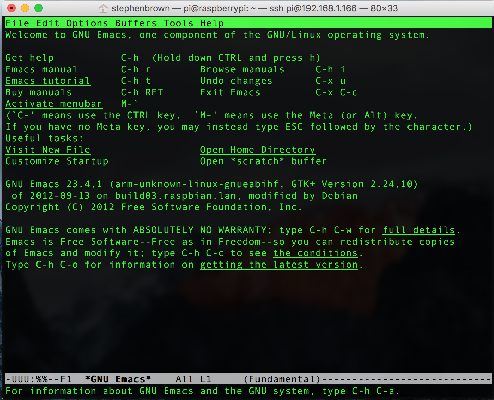
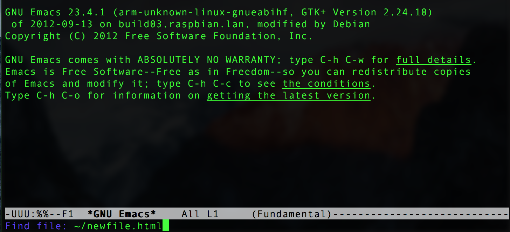

emacs
Introduction
Learn It
- When on a computer system, users will need to be able to edit files.
- Most files contain plain text with no images of video embedded in them (e.g. HTML files, .txt files, .py files). These can be modified by programs called text editors.
- There are various text editors available on Linux systems, and hackers typically have strong feelings about their favourite.
- Some examples are:
- Nano
- vim
- emacs (always with a lower case e)
- gedit
- The Internet community is divided as to whether emacs or vim is better.
- You can make your own mind up on this. We use emacs to author everything you see on BourneToCode.com and BourneToInvent.com though.
- Although originally written for UNIX-like systems, most of the above editors are also availale for other operating systems, like Windows.
Learn It
- Emacs was written back in 1976 by a software engineer called Richard Stallman. He's quite the character in his own right; you can read more about him on his Wikipedia page.

- Despite being nearly 40 years old, emacs continues to be actively developed by the online community, and is one of the oldest computer applications in the World still in active use.
Learn It
- emacs was written for an era in computer science where the keyboard was the only way to enter commands onto a computer and graphics consisted of text appearing on a text-only terminal.
- While superficially, it might seem daunting to enter text without a mouse, but many professional developers find that when one works without ever having to take their hands off the keyboard, they are able to work far more quickly.
- In emacs, shortcuts are either achieved by holding the Control key and pressing another key, or holding the meta key (Alt) and tapping another key.
- The shorthand for this looks like this:
C-x C-f. - This would mean to Hold Control and tap
x, then to hold Control and tapf. You don't need to release the control key each time, but you can if you want to. M-fmeans to hold the Alt key and tap the f key.- Factoid: Instead of holding Alt, you could hit
Esconce then tap thef, just like in the 1980s.
Try It

- Load up emacs either by loading it from the applications menu or by typing
emacsin the terminal. They both work the same way, but the version you load with the mouse will also allow you to use the mouse to navigate around documents. The screen will look like the image above. - We'll create a quick web page to get to grips with working on a file.
- emacs uses (about 2000) keyboard shortcuts to allow users to achieve all manner of activities. We'll only need a tiny number of these to get some productive work done.
- Type
C-x, C-fwhich is the combination to open a new file.

- At the bottom of the screen, the computer will show you the
~/prompt, which is inviting you to enter the name of the file you'd like to open or create. - Type
index.htmland hit enter to make a new, empty HTML file in your home folder. - Use your mouse to copy and paste this into the new, empty document…
<html> <head><title> I'm a l33t Ha><0r </title> <body> Computer Science ftw! </body> </html>
- Save the work with
C-x, C-s. - Quit out of emacs using
C-x, C-c. - From the terminal, load your file up by typing
firefox newfile.html - For a taste of the 1970s, you can also use a terminal web browser called 'lynx' to browse the web. Type things liks
lynx google.co.ukto get started, and typeqto quit when done. - Task: Try opening your file again, changing the file a little and saving it without looking at your notes.
- Let's go one better, and (temporarily) host a web server in the current directory we're in on our machine. Type this in the console.
ifconfig | grep 'inet addr:'
- The first of the two lines shown will contain your IP address (it'll say something like 192.168.1.2).
- Make a note of this. You'll need to give this to someone else to let them view your page.
- Next, type…
twistd -n web -p 80 --path .
- Your web server is now live. A user on another computer on your network can view your web page by browsing to:
http://192.168.1.2/(or whatever your IP address is). - Users on Linux machines all around the World run web servers in a similar way to build the World Wide Web.
- When you're done serving web pages, press
Ctrl+Cto stop the server and get your command line back.
Try It
- If you were coding a large program or using emacs to read a large document, you might end up with hundreds of lines you've need to be able to quickly get through. The following commands are useful for navigating through a document without needing to take your hands off the keyboard:
C-vScroll down a page M-vScroll up a page M-fMove forward one word M-bMove backwards one word
Try It
- The emacs community also include several games within emacs.
- Try typing some of the following.
- Note: You can type
qto exit them.M-x tetrisM-x pongM-x snakeM-x bubblesM-x dunnetM-x hanoiM-x doctor
Badge It
- Silver: Write a tutorial (in emacs) for someone who's never used emacs before to explain how to make a new file, change it, save it and quit emacs.
- Gold: Research how to cut, copy and paste in emacs. Write this on the bottom of your answer to the silver badge. Note: It's not called cut, copy and paste in UNIX-like systems like Linux.
- Platinum: The other popular text editor is
vi. Find out how to edit a file, save it and quit. Give your teacher a demonstration (or add it to your silver/gold notes to collect this badge.